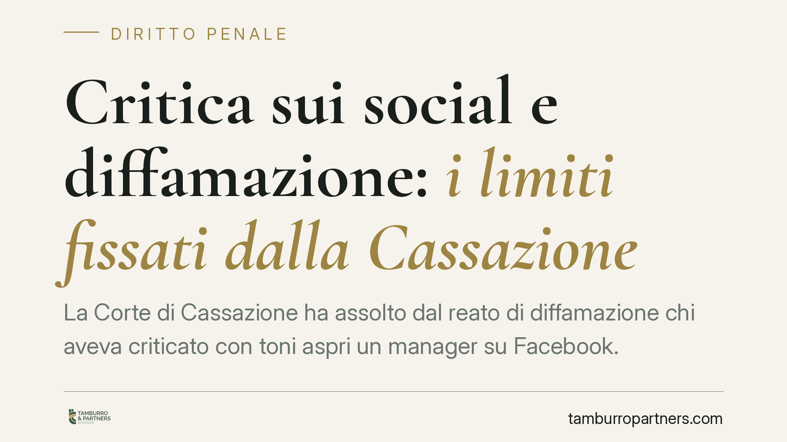

Critica sui social e diffamazione: i limiti fissati dalla Cassazione
La Corte di Cassazione ha assolto dal reato di diffamazione chi aveva criticato con toni aspri un manager su Facebook. Le espressioni, pur forti, erano agganciate a condotte reali e di interesse pubblico. Vale il diritto di critica, non una fantomatica "diffamazione lecita": quando il post rispetta verità, pertinenza e continenza, il reato non sussiste.

Il caso: insulti su Facebook, ma collegati a fatti reali
Un utente aveva pubblicato su Facebook post dai toni aspri nei confronti dell'amministratore di un'azienda, con riferimenti anche all'operato di alcuni sindaci sardi. Il contenuto gli era costato un'imputazione per diffamazione.
La Corte di Cassazione penale ha ribaltato la lettura, assolvendo l'autore dei post. Il punto decisivo: ogni epiteto non era un insulto gratuito, ma era ancorato a una condotta concreta e verificabile, su temi di interesse collettivo. In questi casi non parliamo di "diffamazione lecita" — formula giuridicamente scorretta — ma di critica che esclude il reato perché coperta da una scriminante, cioè una causa che rende il fatto non punibile.
Inquadramento normativo
La diffamazione è disciplinata dall'art. 595 del Codice penale e punisce chi, comunicando con più persone, offende l'altrui reputazione. Il terzo comma dell'art. 595 c.p. prevede un'aggravante quando l'offesa è recata con un mezzo di pubblicità: aumenta la pena e muta la gravità del fatto. La diffusione tramite social network viene ricondotta a questa aggravante per via interpretativa, non da una previsione testuale espressa: il legislatore non ha scritto "Facebook", ma la giurisprudenza equipara la piattaforma a un mezzo di pubblicità.
Il bilanciamento arriva dall'art. 21 della Costituzione, che tutela la libertà di manifestazione del pensiero. Da qui il diritto di critica: quando ricorrono precise condizioni, l'espressione offensiva non integra reato. La diffamazione, in sé, non è mai "lecita"; è la critica che, se legittima, esclude la punibilità.
Diffamazione social: i tre requisiti della critica lecita
Perché un contenuto pubblicato online resti nel perimetro del diritto di critica, servono tre presupposti.
- Verità: il fatto posto a base del giudizio deve essere vero o, almeno, seriamente verificato. Non serve che sia vera l'opinione, ma il nucleo fattuale da cui parte.
- Pertinenza: l'argomento deve avere un interesse pubblico. La critica a un manager sulla gestione aziendale o a un amministratore pubblico rientra; l'attacco alla sfera privata senza rilievo collettivo no.
- Continenza: il tono, pur aspro, non deve trascendere in gratuità. L'epiteto resta ammissibile se funzionale alla critica e collegato alla condotta; diventa illecito se è mero insulto fine a sé stesso.
Nel caso deciso dalla Corte, ogni espressione risultava agganciata a un comportamento reale e di interesse pubblico: ecco perché i tre requisiti sono stati ritenuti rispettati.
Implicazioni pratiche
Per chi scrive sui social, la lezione è netta: la durezza non è vietata, l'insulto scollegato dai fatti sì. Un giudizio tagliente su un manager o su un pubblico amministratore può essere legittimo se poggia su circostanze verificabili e riguarda il loro ruolo.
Per chi si ritiene offeso, cambia la soglia di valutazione: prima di agire occorre chiedersi se il post attacchi la condotta pubblica (difficile da censurare) o la persona in quanto tale, senza base fattuale (più facilmente diffamatorio).
Attenzione alla tempistica: la diffamazione è perseguibile a querela, da proporre entro tre mesi dal giorno in cui si è avuta notizia del fatto costituente reato (art. 124 c.p.). Superato quel termine, l'azione penale non è più proponibile.
Cosa fare in concreto
- Verifica i fatti prima di pubblicare: salva documenti, screenshot e fonti che sostengono ciò che affermi. La verità del nucleo fattuale è la prima difesa.
- Collega ogni giudizio a una condotta: evita l'epiteto isolato; mostra sempre il comportamento che lo giustifica.
- Resta nel perimetro dell'interesse pubblico: critica il ruolo e l'operato, non la vita privata.
- Se ti ritieni diffamato, muoviti nei tre mesi: raccogli e cristallizza le prove (URL, data, autore) e proponi querela entro il termine.
- Fatti assistere nella valutazione preliminare: distinguere critica legittima e offesa punibile richiede un'analisi caso per caso.
> Nota: il numero della pronuncia va verificato presso il CED della Corte di Cassazione prima di ogni citazione ufficiale. La decisione è riconducibile alla giurisprudenza penale di legittimità in tema di diritto di critica.
---
Contributo informativo a cura di Tamburro & Partners Avvocati - Avv. Giuseppe Tamburro. Non costituisce parere legale.
Ogni condominio ha una storia a sé.
Se gestisci un'amministrazione e vuoi un confronto su una specifica questione condominiale, scrivi allo studio. Ti rispondiamo entro un giorno lavorativo.